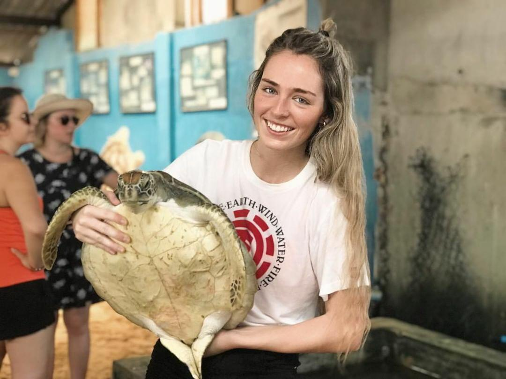
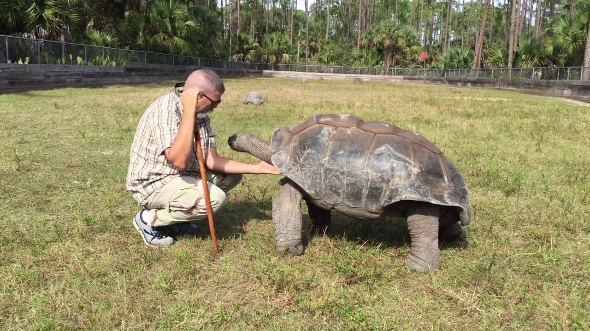

welcome to the donation page
Your donation helps! Please help us to protect the endangered sea turtles and their habitats. Every donation, large or small, ssupports us in our fight against poaching and helps us to realize further species protection measures. Many thanks
we will run a quick list of donation thatcan be made here

Adopt turtle
aopting a turtle will help connect to the nature and it will have a safe habbitate as well

volunteering
come visit us and support us on our daily process of maintainging and grooming the turtles

eqquiment supply
by donating suppiles it could reduce the cost of our turtle hatchery and benifit for the greater good